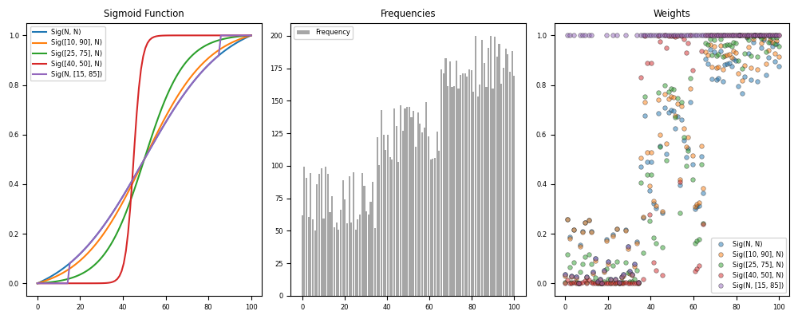

Note
Click here to download the full example code
Metrics - weights¶
Example using your package
7 8 9 10 11 12 13 14 15 16 17 18 19 20 21 22 23 24 25 26 27 28 29 30 31 32 33 34 35 36 37 38 39 40 41 42 43 44 45 46 47 48 49 50 51 52 53 54 55 56 57 58 59 60 61 62 63 64 65 66 67 68 69 70 71 72 | # Libraries
import numpy as np
import pandas as pd
import matplotlib as mpl
import matplotlib.pyplot as plt
import statsmodels.robust.norms as norms
# pyAMR
from pyamr.metrics.weights import SigmoidA
# Matplotlib options
mpl.rc('legend', fontsize=6)
mpl.rc('xtick', labelsize=6)
mpl.rc('ytick', labelsize=6)
mpl.rc('font', size=7)
# Set pandas configuration.
pd.set_option('display.max_colwidth', 14)
pd.set_option('display.width', 150)
pd.set_option('display.precision', 4)
# Constants
length = 100
# Create time-series.
x = np.linspace(0,100,100)
f = np.concatenate((np.random.rand(35)*50+50,
np.random.rand(30)*50+100,
np.random.rand(35)*50+150))
# Weight Functions
w_functions = [
SigmoidA(r=200, g=0.5, offset=0.0, scale=1.0),
SigmoidA(r=200, g=0.5, offset=0.0, scale=1.0, percentiles=[10,90]),
SigmoidA(r=200, g=0.5, offset=0.0, scale=1.0, percentiles=[25,75]),
SigmoidA(r=200, g=0.5, offset=0.0, scale=1.0, percentiles=[40,50]),
SigmoidA(r=200, g=0.5, offset=0.0, scale=1.0, thresholds=[15,85])]
# Create figure
fig, axes = plt.subplots(1,3, figsize=(10,4))
# Plot frequencies
axes[1].bar(x, f, color='gray', alpha=0.7, label='Frequency')
# Plot weights
for i,W in enumerate(w_functions):
axes[0].plot(x, W.weights(x), label=W._identifier(short=True))
axes[2].plot(x, W.weights(f), marker='o', alpha=0.5,
markeredgecolor='k', markeredgewidth=0.5, markersize=4,
linewidth=0.00, label=W._identifier(short=True))
# Titles
axes[0].set_title('Sigmoid Function')
axes[1].set_title('Frequencies')
axes[2].set_title('Weights')
# Legends
axes[0].legend()
axes[1].legend()
axes[2].legend()
# Tight layout
plt.tight_layout()
# Show
plt.show()
|
Total running time of the script: ( 0 minutes 0.612 seconds)